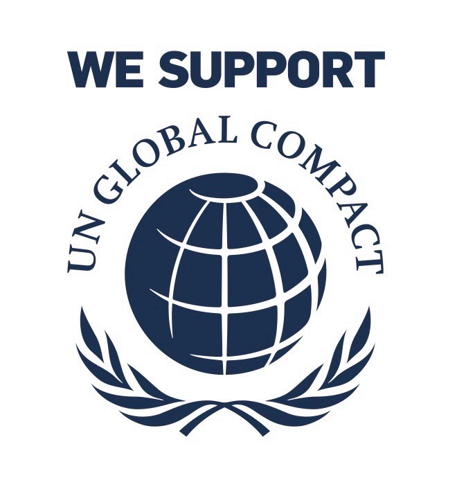

التزامنا بالميثاق العالمي للأمم المتحدةOur Commitment to the UN Global Compact
بوصفه مشاركاً في الميثاق العالمي للأمم المتحدة منذ عام 2026، يلتزم مكتب ASK - عمرو سعيد قطب للمحاماة والاستشارات القانونية بمواءمة استراتيجياته وعملياته مع المبادئ العالمية لحقوق الإنسان والعمل والبيئة ومكافحة الفساد، واتخاذ الإجراءات التي تعزز الأهداف المجتمعية.As a participant in the United Nations Global Compact since 2026, ASK - Amr Saied Kotb Legal Advisors & Law Firm is committed to aligning its strategies and operations with universal principles on human rights, labour, environment and anti-corruption, and taking actions that advance societal goals.
والميثاق العالمي للأمم المتحدة، الذي انطلق عام 2000، هو أكبر مبادرة للاستدامة المؤسسية في العالم، ويضم أكثر من 20,000 شركة مشاركة.Launched in 2000, the UN Global Compact is the world's largest corporate sustainability initiative, with more than 20,000 participating companies.
رسالة الترحيبLetter of Welcome
“We applaud your leadership in making this decision and welcome your company's participation in the Global Compact — the world's largest corporate citizenship initiative.”Sanda Ojiambo, Executive Director, United Nations Global Compact — 18 May 2026
المبادئ العشرة للميثاق العالمي للأمم المتحدةThe Ten Principles of the UN Global Compact
حقوق الإنسانHuman Rights
- المبدأ الأولPrinciple 1: يجب على الشركات دعم واحترام حماية حقوق الإنسان المُعلنة دولياً.Businesses should support and respect the protection of internationally proclaimed human rights;
- المبدأ الثانيPrinciple 2: التأكد من أنها لا تتواطأ في انتهاكات حقوق الإنسان.make sure that they are not complicit in human rights abuses.
 العملLabour
العملLabour
- المبدأ الثالثPrinciple 3: يجب على الشركات دعم حرية تكوين الجمعيات والاعتراف الفعلي بحق المفاوضة الجماعية.Businesses should uphold the freedom of association and the effective recognition of the right to collective bargaining;
- المبدأ الرابعPrinciple 4: القضاء على جميع أشكال العمل القسري والإلزامي.the elimination of all forms of forced and compulsory labour;
- المبدأ الخامسPrinciple 5: القضاء الفعلي على عمالة الأطفال.the effective abolition of child labour; and
- المبدأ السادسPrinciple 6: القضاء على التمييز في الاستخدام والمهنة.the elimination of discrimination in respect of employment and occupation.
 البيئةEnvironment
البيئةEnvironment
- المبدأ السابعPrinciple 7: يجب على الشركات دعم المقاربة الاحترازية تجاه التحديات البيئية.Businesses should support a precautionary approach to environmental challenges;
- المبدأ الثامنPrinciple 8: المبادرة بتعزيز المسؤولية البيئية.undertake initiatives to promote greater environmental responsibility; and
- المبدأ التاسعPrinciple 9: تشجيع تطوير ونشر التقنيات الصديقة للبيئة.encourage the development and diffusion of environmentally friendly technologies.
 مكافحة الفسادAnti-Corruption
مكافحة الفسادAnti-Corruption
- المبدأ العاشرPrinciple 10: يجب على الشركات مكافحة الفساد بجميع أشكاله بما فيها الابتزاز والرشوة.Businesses should work against corruption in all its forms, including extortion and bribery.
المبادئ العشرة للميثاق العالمي للأمم المتحدة مستمدة من: الإعلان العالمي لحقوق الإنسان، وإعلان منظمة العمل الدولية بشأن المبادئ والحقوق الأساسية في العمل، وإعلان ريو بشأن البيئة والتنمية، واتفاقية الأمم المتحدة لمكافحة الفساد.The Ten Principles of the United Nations Global Compact are derived from: the Universal Declaration of Human Rights, the International Labour Organization's Declaration on Fundamental Principles and Rights at Work, the Rio Declaration on Environment and Development, and the United Nations Convention Against Corruption.
المبادئ العشرة في عملنا القانونيThe Ten Principles in Our Legal Work
حقوق الإنسانHuman rights
التقاضي والاستشارات في حماية الحقوق والحريات أمام القضاء الإداري والمحكمة الدستورية العليا.Litigation and advice on rights and freedoms before the administrative judiciary and the Supreme Constitutional Court.
العملLabour
تمثيل العمال وأصحاب العمل في منازعات العمل، ومراجعة لوائح العمل وسياسات عدم التمييز.Representing employees and employers in labour disputes, and reviewing work rules and non-discrimination policies.
البيئةEnvironment
الاستشارات في قانون البيئة والتراخيص البيئية والامتثال للمعايير البيئية.Advice on environmental law, environmental licensing and compliance.
مكافحة الفسادAnti-corruption
برامج مكافحة الفساد والرشوة، ومكافحة غسل الأموال، والعقوبات الدولية، وحوكمة الشركات.Anti-bribery and anti-corruption programmes, AML, sanctions compliance and corporate governance.
أهداف التنمية المستدامة التي نسهم فيهاSustainable Development Goals We Contribute To
- 5المساواة بين الجنسينGender equality
- 8العمل اللائق ونمو الاقتصادDecent work and economic growth
- 10الحد من أوجه عدم المساواةReduced inequalities
- 16السلام والعدل والمؤسسات القويةPeace, justice and strong institutions
- 17عقد الشراكات لتحقيق الأهدافPartnerships for the goals